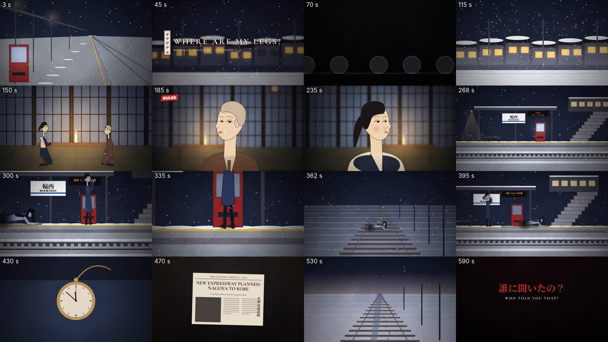

A Hindi horror short set at the fictional Kohripur Junction in the eastern UP fog belt, December 2011. It keeps the Teke Teke folklore core and the story skeleton you asked for, and adds new characters, a new cause, new twists and a new ending. Runtime ≈ 10:58, 1920×1080 at 60 fps.
Every take is loudness-matched, so you're comparing voices, not volume. A local Whisper model transcribed each take, and all 20 read the Hindi correctly. My marked picks come from measurements only (pace, how soft the delivery is, transcript clarity); please choose by ear. Character processing (PA band-limiting and echo, Chanda's cold reverb) is added in the mix, so these are dry.
“अगर कभी कोहरे वाली रात में… तो भागना मत। वो आपसे तेज़ है।”
“दूसरा। अगर पीछे से ठक-छन सुनाई दे… भागना मत। तू तेज़ है, अनाया।”
“त… तुम्हारे पैर बावन वाली पैसेंजर में हैं… प्लेटफ़ॉर्म नंबर तीन पर।”
“और जिसने ये कहानी सुन ली… तीन रातों के अंदर, वो उसके पास आती है।”
“मेरे… पैर… कहाँ हैं?”
“यात्रीगण कृपया ध्यान दें। कोहरे के कारण लोकल पैसेंजर पचास मिनट देरी से चल रही है।”
These 13 generated effects are usable as textures. Five more didn't follow their brief when measured: the bangle clink and glass shatter came out near-silent, the clock never stops, the feedback never cuts, and the kettle has no clean stop. The crawl also lacks a steady rhythm. I'll build those precise moments in code, cut on exact frames, and layer the generated gravel texture under the crawl.
Living Line Dark Canvas · मनोवैज्ञानिक हॉरर · लक्ष्य अवधि ≈ 10:45 · 1920×1080 · 16:9 · 60 fps
Status: DRAFT v1 — awaiting approval.
Folklore core retained (a girl cut in two by a train crawls on her elbows and asks "where are my legs?"; one answer saves you; anyone who hears the story is visited within three nights; three rules; a second question). Characters, setting, cause, twists and ending are original to this project.
पात्र
ध्वनि-संकेत (motif): ठक… छन… (गिट्टी पर कोहनी + कलाई की चूड़ी) · 11:52 "बावन" · लाउडस्पीकर की खरखराहट · केतली की सीटी।
कोहरे में डूबा सुनसान प्लेटफ़ॉर्म। एक पीली बत्ती। चाय की केतली की धीमी सीटी, फिर ख़ामोशी।
नैरेटर (धीमा, पास): अगर कभी कोहरे वाली रात में… किसी सुनसान स्टेशन पर… आप अकेले हों,
और पीछे से ये आवाज़ आए—
[SFX: ठक… छन… ठक… छन…]
नैरेटर: …तो भागना मत।
वो आपसे तेज़ है।
वो रेंगती हुई इतने पास आएगी कि आपकी एड़ी छू ले… और एक सवाल पूछेगी।
चंदा (फुसफुसाहट, कान के पास): "मेरे… पैर… कहाँ हैं?"
नैरेटर: सिर्फ़ एक जवाब है जो आपको बचा सकता है। पूर्वी उत्तर प्रदेश की रेलवे कॉलोनियों के बच्चे कभी ये जवाब जानते थे।
ये कहानी एक लड़की की है, जिसने वो जवाब अपनी माँ से सीखा। तीन नियम। एक जवाब।
…और एक दूसरा सवाल। जिसके बारे में किसी ने कभी नहीं बताया था।
[टाइटल: मेरे पैर कहाँ हैं? — कोहरीपुर जंक्शन · दिसंबर 2011]
नैरेटर: कोहरीपुर जंक्शन, पूर्वी उत्तर प्रदेश। दिसंबर, 2011। शीतलहर ने बारह दिन से सूरज नहीं निकलने दिया था। गाड़ियाँ दस-दस घंटे लेट थीं।
अनाया शुक्ला पंद्रह साल की थी। ज़िले की चार सौ मीटर चैंपियन। अगले हफ़्ते राज्य ट्रायल थे।
कोहरे में ग्राउंड नहीं दिखता था, तो वो स्कूल के बरामदे में दौड़ती थी। एक सिरे से दूसरे सिरे तक। बार-बार।
[SFX: खाली बरामदे में तेज़ क़दम, गिनती की साँसें]
नैरेटर: छुट्टियों से पहले की आख़िरी शाम, क्लास की अंगीठी के पास, रुबीना ने एक कहानी सुनाई।
रुबीना (धीमे, मज़े लेकर): "बहुत साल पहले, इसी स्टेशन पर, एक लड़की थी। कोहरे वाली रात। गाड़ी पकड़ने के लिए पटरियाँ पार कर रही थी… और गाड़ी ने उसे बीच से दो कर दिया।"
"पर उस रात इतनी ठंड थी कि ठंड ने ही उसे कुछ देर ज़िंदा रखा। वो कोहनियों के बल गिट्टी पर रेंगती रही… अपने पैर ढूँढती रही। हर बार उसकी चूड़ियाँ पटरी से टकरातीं।"
[SFX: ठक… छन… ठक… छन]
"वो आज भी रेंगती है। गाड़ी से तेज़। और जो अकेला मिल जाए, उससे पूछती है, मेरे पैर कहाँ हैं? गलत जवाब दिया… तो वो तुम्हारे पैर ले जाती है।"
(रुककर, और धीमे) "और जिसने ये कहानी सुन ली… तीन रातों के अंदर, वो उसके पास आती है।"
अनाया (हँसकर): "अच्छा? तो सही जवाब क्या है?"
रुबीना (मुस्कुराकर): "कल बताऊँगी।"
नैरेटर: उसी रात कोहरा उतर आया। इतना घना कि अपना हाथ न दिखे। ठंड से तार टूटे, और आधा कोहरीपुर अँधेरे में डूब गया।
स्कूल बंद। मोबाइल टावर बंद। रुबीना का परिवार शादी के लिए गाँव निकल गया।
वो जवाब… कभी नहीं बता पाई।
नैरेटर: अनाया की माँ, सुधा शुक्ला, बीस साल से कोहरीपुर जंक्शन की रात की अनाउंसर थीं। पूरा शहर उनकी आवाज़ पहचानता था।
सुधा PA (एको): "यात्रीगण कृपया ध्यान दें…"
नैरेटर: और हर रात, ठीक ग्यारह बजकर बावन मिनट पर, वो एक अजीब अनाउंसमेंट करती थीं, जिसका किसी टाइम-टेबल में कोई मतलब नहीं था।
सुधा PA: "प्लेटफ़ॉर्म नंबर एक से… कोई गाड़ी नहीं जाएगी।"
नैरेटर: किसी ने कभी नहीं पूछा, क्यों।
दूसरी रात सुधा को तेज़ बुख़ार था। लालटेन की रोशनी में अनाया ने हँसते-हँसते रुबीना वाली कहानी सुना दी।
[SFX: चाय का काँच का गिलास फ़र्श पर गिरकर टूटता है]
सुधा (बहुत धीमे): "ये तुझे… किसने सुनाई?"
नैरेटर: फिर वो धीरे से बैठीं, और वो बताया जो आज तक किसी को नहीं बताया था।
सुधा: "रेलवे के पुराने लोग इसके नियम मानते थे। सुन। तीनों।"
"पहला। कोहरे में, रात को, प्लेटफ़ॉर्म के आख़िरी छोर पर अकेले कभी मत खड़ी होना।"
"दूसरा। अगर पीछे से ठक-छन सुनाई दे… भागना मत।" (रुककर) "तू तेज़ है, अनाया। वो तुझसे तेज़ है।"
"तीसरा। नीचे मत देखना, जब तक वो पूछ न ले। अगर उसने पूछने से पहले तेरा चेहरा देख लिया… तो वो पूछेगी ही नहीं।"
"और जब वो पूछे कि उसके पैर कहाँ हैं, तू कहना…" (गहरी साँस) "तुम्हारे पैर बावन वाली पैसेंजर में हैं। प्लेटफ़ॉर्म नंबर तीन पर।"
अनाया: "बावन वाली? वो गाड़ी तो सालों पहले बंद हो गई, माँ।"
सुधा: "इसीलिए काम करता है। वो प्लेटफ़ॉर्म तीन पर जाकर इंतज़ार करती है। गाड़ी कभी नहीं आती… और तब तक सुबह हो जाती है।"
नैरेटर: माँ ने उससे तीन बार कहलवाया।
अनाया: "तुम्हारे पैर बावन वाली पैसेंजर में हैं, प्लेटफ़ॉर्म नंबर तीन पर।"
(तेज़) "तुम्हारे पैर बावन वाली पैसेंजर में हैं, प्लेटफ़ॉर्म नंबर तीन पर।"
(फुसफुसाकर) "तुम्हारे पैर बावन वाली पैसेंजर में हैं… प्लेटफ़ॉर्म नंबर तीन पर।"
नैरेटर: तीसरी रात, आख़िरी रात थी।
ट्रायल की प्रैक्टिस में देर हो गई। हाईवे पर कोहरे में एक ट्रक पलट गया था, रास्ता बंद। घर पहुँचने का एक ही तरीका बचा था: रात की लोकल पैसेंजर, एक स्टेशन आगे।
साढ़े ग्यारह बजे। कोहरीपुर जंक्शन। प्लेटफ़ॉर्म नंबर एक ख़ाली था। एक पीली बत्ती। एक चाय का ठेला, जिसकी केतली कोयलों पर धीमी सीटी दे रही थी।
स्टेशन PA (पुरुष, खरखराता): "यात्रीगण कृपया ध्यान दें। कोहरे के कारण लोकल पैसेंजर पचास मिनट देरी से चल रही है।"
नैरेटर: रात। कोहरा। प्लेटफ़ॉर्म पर अकेली। पहला नियम… टूट चुका था।
वो किनारे से जितना दूर हो सकती थी, खड़ी हो गई, पीठ चाय के ठेले से टिकाकर।
[SFX: केतली की सीटी अचानक बंद]
और केतली की सीटी… बंद हो गई।
[ख़ामोशी, बेड पतला होता है] [SFX: ठक.] पटरियों से।
[ठक… छन.] पास।
[ठक… छन… ठक… छन] फिर वो आवाज़ प्लेटफ़ॉर्म पर थी। उसके पीछे।
उसकी टाँगों की हर नस भागना चाहती थी।
सुधा PA (खरखराहट के साथ, घबराई हुई): "अनाया! प्लेटफ़ॉर्म से हट! सीढ़ियों की तरफ़ भाग, जल्दी!"
नैरेटर: माँ की आवाज़। उसने एक क़दम बढ़ाया… फिर रुक गई।
माँ घर पर थीं, बुख़ार में।
और पूरे स्टेशन की बिजली… तीन दिन से गुल थी।
बिना बिजली के… लाउडस्पीकर बोल कैसे रहा था?
[SFX: माइक की सीटी, फिर एकदम ख़ामोशी]
वो रुकी रही। दूसरा नियम।
कोई ठंडी चीज़ उसकी एड़ी के पीछे छुई।
[SFX: काँच की चूड़ी का हल्का स्पर्श]
उसने नज़रें अँधेरी पटरियों पर टिकाए रखीं। तीसरा नियम। नीचे मत देखना।
और उसके घुटनों के पास से, एक लड़की की आवाज़ आई—
चंदा: "मेरे… पैर… कहाँ हैं?"
अनाया (काँपती, मुश्किल से): "त… तुम्हारे पैर बावन वाली पैसेंजर में हैं… प्लेटफ़ॉर्म नंबर तीन पर।"
[ख़ामोशी 1.2 s]
[SFX: ठक… छन… दूर जाता हुआ, पटरियों पर, प्लेटफ़ॉर्म तीन की तरफ़]
नैरेटर: फिर धीरे-धीरे वो आवाज़ दूर गई। पटरियों पर उतरी। प्लेटफ़ॉर्म तीन की तरफ़।
अनाया ने साँस छोड़ी।
और ठीक उसके कान के पास, उसी आवाज़ ने दूसरा सवाल पूछा—
चंदा (कान में): "ये जवाब… तुझे किसने सिखाया?"
नैरेटर: इस सवाल के बारे में किसी ने नहीं बताया था। इसका कोई नियम नहीं था। तो उसने सच बोल दिया।
अनाया: "मेरी… माँ ने। सुधा शुक्ला।"
[सबसे लंबी ख़ामोशी, 1.6 s]
चंदा (धीमे, पहचानते हुए): "सुधा… दीदी।"
नैरेटर: और वो आवाज़ फिर दूर गई। पर इस बार पटरियों की तरफ़ नहीं। सीढ़ियों से ऊपर। स्टेशन के बाहर। रेलवे कॉलोनी की तरफ़। उसके घर की तरफ़।
[SFX: दूर से हॉर्न, लोकल पैसेंजर आकर रुकती है]
लोकल आई। अनाया उसमें नहीं चढ़ी। उस पूरी रात में पहली बार… वो भागी।
तीन किलोमीटर। कोहरे में, सरसों के खेतों के बीच। ज़िंदगी की सबसे तेज़ दौड़।
[SFX: कच्ची मिट्टी पर दौड़ते क़दम, हाँफती साँस, दूर कुत्ते]
नैरेटर: घर का दरवाज़ा खुला था। आँगन में कोहरा भर आया था। और आँगन की ओस में, दरवाज़े से अंदर तक, एक लंबी, पतली घिसटन की लकीर थी।
माँ बरामदे में बैठी थीं। शॉल ओढ़े, सीने पर रेलवे का पुराना बैज। दीवार घड़ी ग्यारह बजकर बावन मिनट पर रुकी हुई थी।
वो ज़िंदा थीं। और बिल्कुल शांत।
सुधा: "वो आई थी। बैठ। अब तुझे सच जानना चाहिए।"
सुधा: "दिसंबर, उन्नीस सौ इक्यानवे। मेरी नौकरी का पहला महीना। चौबीस साल की थी।"
"उस रात कोहरे की वजह से बावन वाली पैसेंजर का प्लेटफ़ॉर्म आख़िरी मिनट पर बदल गया। तीन से एक। पर्ची मेरे हाथ में थी। मैं थकी थी… और मैंने पुराना ही पढ़ दिया।"
सुधा PA (1991, युवा आवाज़): "यात्रीगण कृपया ध्यान दें। बावन वाली पैसेंजर… प्लेटफ़ॉर्म नंबर तीन पर।"
सुधा: "एक लड़की थी। पंद्रह साल की। चंदा। उसके पापा प्लेटफ़ॉर्म तीन पर उसका इंतज़ार कर रहे थे। वो पटरियाँ पार करके भागी… और गाड़ी प्लेटफ़ॉर्म एक पर आ गई।"
[SFX: हॉर्न, ब्रेक की चीख़, कट टू ख़ामोशी]
"मैं नीचे भागी। वो ज़िंदा थी। उसने मेरी तरफ़ देखा और पूछा, दीदी… मेरे पैर कहाँ हैं?"
"मुझसे नीचे देखा नहीं गया। मुँह से वही निकला जो मैंने अभी-अभी माइक पर बोला था। 'प्लेटफ़ॉर्म नंबर तीन पर।'"
चंदा (स्मृति, बहुत धीमे): "शुक्रिया… दीदी।"
सुधा: "और वो… चली गई।"
"ये कोई पुराना नियम नहीं था, अनाया। ये एक डरी हुई अनाउंसर की गलती थी। बीस साल से वो प्लेटफ़ॉर्म तीन पर उस गाड़ी का इंतज़ार कर रही है जो वहाँ कभी आई ही नहीं।"
"इसीलिए हर रात बावन मिनट पर बोलती हूँ। प्लेटफ़ॉर्म एक से कोई गाड़ी नहीं जाएगी। ताकि कोई और बच्चा न भागे।"
"और आज पहली बार… किसी ने उसे मेरा नाम बता दिया।"
अनाया (फुसफुसाकर): "वो… क्या चाहती थी?"
सुधा: "उसने फिर पूछा, मेरे पैर कहाँ हैं। इस बार मैंने सच कहा। कि मैंने गलत प्लेटफ़ॉर्म बोला था। कि गलती मेरी थी।"
अनाया: "फिर?"
सुधा (शॉल कसते हुए, उठती है): "फिर उसने कहा… तो अब सही प्लेटफ़ॉर्म बोल दो, दीदी।"
नैरेटर: अनाया माँ के पास जागते रहने की कोशिश करती रही। कब आँख लगी, पता नहीं।
रात में एक बार, कोहरे के पार, स्टेशन के लाउडस्पीकर से माँ की आवाज़ आई। बिना बिजली के।
सुधा PA (शांत, साफ़): "यात्रीगण कृपया ध्यान दें… बावन वाली पैसेंजर… प्लेटफ़ॉर्म नंबर एक पर आ रही है।"
[SFX: दूर लंबी सीटी, गुज़रती गाड़ी, चूड़ियाँ छन… छन… दूर होती हुईं]
नैरेटर: दूर, कोहरे में, एक गाड़ी की सीटी बजी। उस रात कोहरे की वजह से एक भी गाड़ी नहीं चली थी।
नैरेटर: सुबह बिजली लौटी। बरामदा ख़ाली था।
स्टेशन पर अनाउंसर केबिन का माइक ऑन था। रजिस्टर खुला था। आख़िरी एंट्री माँ की लिखावट में थी:
[INSERT: "23:52 — बावन वाली पैसेंजर — प्लेटफ़ॉर्म नं. 1 — सही प्लेटफ़ॉर्म"]
और प्लेटफ़ॉर्म एक की ओस में, दो निशान किनारे तक जाते थे। चप्पलों के धीमे-धीमे क़दम… और उनके साथ, एक लंबी घिसटती लकीर। किनारे पर दोनों ख़त्म। पटरी पर ओस अनछुई थी।
सिग्नल केबिन के रजिस्टर में लिखा था: रात 23:52 पर, ट्रैक नंबर एक पर, चालीस सेकंड के लिए… कोई गाड़ी थी।
सुधा शुक्ला फिर कभी नहीं मिलीं।
नैरेटर: अनाया अब उनतीस साल की है। कोहरीपुर जंक्शन की रात की अनाउंसर। ये नौकरी उसने ख़ुद माँगी थी।
हर साल, पहले घने कोहरे वाली रात, ठीक ग्यारह बजकर बावन मिनट पर, बिजली अपने आप चली जाती है… और लाउडस्पीकर अपने आप ऑन हो जाता है।
सुधा PA (दूर): "बावन वाली पैसेंजर… प्लेटफ़ॉर्म नंबर एक पर…"
नैरेटर: और कोहरे में, बहुत दूर, उसे दो आवाज़ें एक साथ सुनाई देती हैं। चूड़ियों की खनक… छन… छन… और साथ में, धीमे, सब्र वाले क़दम।
वो दोनों अब भी किसी गाड़ी में हैं।
नैरेटर (सीधे दर्शक से): तो अब आपने ये कहानी सुन ली है। आप जानते हैं इसका मतलब। तीन रातों के अंदर।
अगर वो पूछे कि उसके पैर कहाँ हैं… पुराना जवाब मत देना। वो अब प्लेटफ़ॉर्म तीन पर इंतज़ार नहीं करती।
कहना: "तुम्हारे पैर बावन वाली पैसेंजर में हैं… प्लेटफ़ॉर्म नंबर एक पर।" उसे अब सही प्लेटफ़ॉर्म पता है।
और अगर कभी किसी कोहरे वाली रात, लाउडस्पीकर पर आपका नाम पुकारा जाए… सीढ़ियों की तरफ़ मत भागना।
पहले देखना… बिजली है या नहीं।
कमेंट में बताइए, आप क्या जवाब देते? पर ये कमेंट किसी स्टेशन पर बैठकर मत लिखना। आज रात तो बिल्कुल नहीं।
[END CARD: LIVING LINE DARK CANVAS]
Status: v1, awaiting approval together with SCRIPT_HI.md. Built with the project's horror-* skills.
| Audience / intensity | 13+, psychological horror. Violence is implied: the accident is never shown; the crawling girl is seen only as hands, bangles, a fog silhouette and the drag line (horror-fx-gore / horror-safety). |
|---|---|
| Medium | Code-drawn 2D (Roopkund pipeline: ink rig, cel shading, procedural sets), HyperFrames master timeline |
| Length / format | ≈ 10:58 · 1920×1080 · 16:9 · 60 fps · stereo, −14 LUFS |
| Subgenre / fear strategy | Folk-urban legend; dread → suspense → uncanny voice → guilt reveal → bittersweet uncanny ending |
| What the protagonist can lose | Her legs (she's a 400 m runner) and her mother |
| Location | Fictional कोहरीपुर जंक्शन, eastern Uttar Pradesh fog belt, December 2011 cold wave (real-world texture: 10-hour delays, power cuts, coal tea stalls, railway colony) |
| # | Beat | Protagonist attempt | Cost / new problem |
|---|---|---|---|
| 1 | Hears the legend (SCN-03) | Laughs it off, asks for the answer | Answer withheld; the three-night clock starts |
| 2 | Storm cuts town off (SCN-04) | — | Rubina unreachable |
| 3 | Asks mother (SCN-05/06) | Learns three rules + answer | Mother's fear plants the mystery (glass breaks) |
| 4 | Night 3 alone (SCN-07) | Stands far from the edge, back to the stall | Rule 1 broken; kettle dies; sound behind her |
| 5 | Mother's voice on the PA (SCN-08) | Deduces the trick: no power, mother is home | Holds still; cold touch on ankle |
| 6 | Question 1 | Gives the answer without looking | It works, then question 2 arrives |
| 7 | Question 2 (SCN-09) | Tells the truth: her mother's name | Threat heads for her home |
| 8 | The run (SCN-09/10) | Runs 3 km | Drag line into the house; clock stopped at 11:52 |
| 9 | The confession (SCN-11) | Listens; asks what Chanda wants | Mother chooses to make the correct announcement |
| 10 | Dawn (SCN-13) | Finds register + footprints | Mother gone; signal log proves a train |
| 11 | Epilogue / outro | Takes her mother's job | Rule updated: platform one; new survival rule: check the power |
The protagonist makes two meaningful solutions (rule-based deduction on the PA trick; telling the truth), and each creates a new problem. The final beats pay off earlier plants.
| Setup | Payoff |
|---|---|
| Sudha's odd 11:52 "प्लेटफ़ॉर्म एक से कोई गाड़ी नहीं जाएगी" (SCN-05) | Revealed as her guard ritual (SCN-11); the epilogue PA flips it to "एक पर आ रही है" |
| Town power cut (SCN-04) | Anaya's deduction that the PA can't speak (SCN-08); the correct announcement comes "बिना बिजली के" (SCN-12); the outro rule "पहले देखना, बिजली है या नहीं" |
| Bangles on the crawl (SCN-03) | Cold bangle touch (SCN-08); bangles fading on the ghost train (SCN-12, 14) |
| "बावन वाली पैसेंजर बंद हो गई" (SCN-06) | The train runs once more at 23:52 on track one (SCN-12/13) |
| Anaya the runner (SCN-02) | The rule "you're fast, she is faster" (SCN-06); she finally runs (SCN-09) |
| Wall clock (SCN-10) | Stops at 11:52, the time of the announcement |
| SCN | viewer knows | Anaya knows | threat location | expected → actual | intensity |
|---|---|---|---|---|---|
| 01 | The rule exists | — | Behind the camera | A crawl sound → a whisper at the ear | 3 |
| 03 | Legend | Legend (disbelieves) | Story-space | Fun story → three-night clock | 1.5 |
| 05 | Mother hiding something | Same | — | Laugh → glass breaks | 2 |
| 07 | Rule 1 broken | Same | Tracks → platform | Train → kettle dies, crawl approaches | 3.5 |
| 08 | PA = mother? | Deduces it's not | Behind her, at her ankle | Run to mother → stillness wins | 4.5 |
| 09 | Second question | No rule for it | At her ear → her home | Safe → home in danger | 4 |
| 10 | Drag line | Same | Inside the house | Mother dead → mother alive, calm (relief + dread) | 3 |
| 11 | Truth | Truth | — | Monster → victim of an error (grief) | 2.5 |
| 12–14 | Mother goes with Chanda | Same | Track one | Silence → whistle, bangles | 3 → 2 (uncanny ache) |
| 15 | New rule | — | You | Comfort → threat to the viewer | 3 |
The curve alternates instead of rising monotonically. Breathing room sits in SCN-02, 04, 10 and 11.
Honest scale note: about 11 minutes needs ~45 shots, 4 character rigs (with full-body walk/run and seated poses, not just the close-up we built), ~6 sets, and ~39,500 frames at 60 fps. The rigs make 60 fps genuinely smooth (motion is computed per frame, not interpolated). The art build is several sessions of work, so I'll deliver it block by block with approvals, as before.
Status: recommendation v1. Nothing is generated until the script is approved.
| Measure | Reference | Our target |
|---|---|---|
| Integrated loudness | −14.0 LUFS | −14 LUFS (YouTube norm) |
| Loudness range | 5.2 LU (voice-forward, compressed) | 5–7 LU (a little more room for the two shocks) |
| True peak | −0.5 dBFS | −1.0 dBTP |
| Bed under narration | never drops below −40 dB: a continuous ambience/music floor | the same, except 3 deliberate dead-air beats (after "दूसरा सवाल", after "सुधा… दीदी", before the ghost-train whistle) |
| Narration pauses | ~17/min, median 0.50 s, longest 1.2 s | ~16/min; 0.4–0.6 s phrase gaps; 1.0–1.6 s only at reveals (marked in the script) |
| Editing pace | median shot 5.5 s, mean 8.6 s | median ~6 s; long holds in SCN-07/08 |
I measured these by analysis (loudness curve, dips, cuts). I can't listen, so "sounds like the reference" is checked against these numbers plus your ears at the audio checkpoint.
Every role is auditioned on two short Hindi lines (≈0.3 credits each), and you pick by ear before the full generation.
| Role | Direction | Candidates to audition |
|---|---|---|
| नैरेटर | deep, close, unhurried, slight smile of menace; never shouts | Landon (Roopkund narrator, keeps channel identity) · Katie Narrator (Living Line, your own voice) · Gideon · Alistair |
| सुधा (44) | tired, warm, guilt under control; breaks once in SCN-11 | Helena · Vera · Elena · Nora |
| सुधा PA | the same voice, processed: 300–3.4 kHz band, light distortion, 1.2 s platform slap-echo | (processing, not a new voice) |
| अनाया (15) | bright, quick, then breath-controlled terror; the whisper-answer must shake | Maya · Zoe · Luna · Pixie |
| रुबीना (15) | playful storyteller, conspiratorial drop on "तीन रातों…" | Gia · Kayla · Hana |
| चंदा | child-girl whisper, very close-mic, breathy, no theatrical growl; "सुधा… दीदी" is recognition, not menace | Chloe · Quinn · Skye (+ local processing: subtle pitch drift, cold reverb, the bangle layer) |
| स्टेशन PA | bored male railway announcer, Hindi PA cadence | Marcus · Kevin |
Hindi delivery notes for the engine: write in Devanagari, use the bracket emotion tags already proven in Roopkund ([hushed], [shaky], [whispers]), one sentence per take, and edit breaths and gaps in post. Per horror-voice-scream, I won't claim the engine can do a convincing scream without an audition. The script deliberately avoids a full scream; the brake squeal and a cut-off gasp carry SCN-11.
One textural idea per cue (horror-score). Indian colour without cliché: a detuned tanpura drone, bowed sarangi-like scrapes, a distant temple-bell decay, harmonium air, low tabla thuds for heartbeat.
| CUE | Span | Function | Texture |
|---|---|---|---|
| M1 | 0:00–0:45 | Cold open dread | Sub-drone + icy breath; cuts out under the whisper; title sting (low brass + bell) |
| M2 | 0:45–2:30 | Ordinary life, cold town | Sparse harmonium + soft tanpura, faint warmth that cools by SCN-04 |
| M3 | 2:30–4:25 | Mother's secret | Low bowed strings, a clock-like pulse; stops on the glass break |
| M4 | 4:25–7:05 | Platform → run | Nearly nothing: a hiss floor; drops to dead air at the kettle; a frantic percussion build only for the run |
| M5 | 7:05–9:25 | Confession / 1991 | Sarangi-like lament, grief not fear; distant train-horn motif |
| M6 | 9:25–10:58 | Dawn, epilogue, outro | Pale high strings, unresolved chord; end-card sting |
Signature ठक… छन (elbow on ballast + glass bangle, 8 variations, near/far); coal kettle whistle + its sudden stop; PA crackle, switch-on thump, feedback whine; fog night bed (distant trucks, owl, dripping, no crickets in a December cold wave); classroom angithi crackle; glass tumbler shattering on stone; diesel horn (distant / passing), brake screech, wheels over joints; running on frozen dirt, breath, distant dogs; wall-clock tick that stops; chappal footsteps on wet concrete; mic-on hum in the cabin.
Stems: VO · PA (processed) · music · ambience · Foley · designed SFX. VO-led side-chain ducking (as in Roopkund) at about −14 LUFS integrated, with the bed held at −32…−38 LUFS-S under narration. Everything is placed on one master timeline in scripts/make_audio_teke.py, which becomes the video's timing source (60 fps timebase).
≈95 lines × 2 takes × 0.3 ≈ 57 · auditions ≈ 10 · music ≈ 11 min ≈ 95 · SFX ≈ 30 × 2 ≈ 60 → ≈ 220 credits (current balance ≈ 2,167).

After approval: voice auditions, then the full audio master for your review, then the visual bibles and animatic, then the 60 fps render in blocks.